変数により幅を制御した刻み目付きボックスチャート
刻み目付きボックス
サマリー
Originのボックスチャートは高度な編集が可能です。このチュートリアルでは、刻み目付きのグループ化ボックスチャートを作成し、他のデータセットによりボックス幅を制御する方法を紹介します。
- 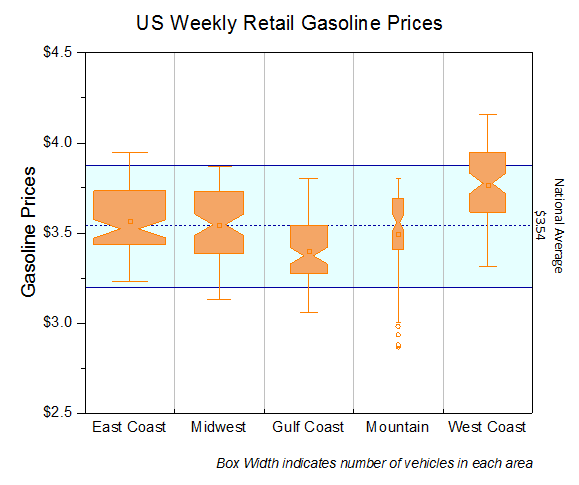
必要なOriginのバージョン: Origin 2015 SR0以降
学習する項目
- ボックスチャートを編集する
- データセットをしようして棒の幅をコントロール
- ボックスチャートの軸を編集する
- 背景としてボックスチャートに塗りつぶし領域を追加する
変数によりボックスの幅を制御するステップ
このチュートリアルは、チュートリアルデータプロジェクト（<Origin EXE フォルダ>\Samples\TutorialData.opj）と関連しています。
Origin Centralにある「このグラフ」を参照してください。(ヘルプ：Origin Centralメニューを選択するか、F11キーを押してダイアログを開き、グラフサンプルタブのドロップダウンリストでボックスチャートを選択します。)
- Tutorial Data.opj を開き、Box Variable Widthフォルダへブラウズします。
- ワークブックBook7をアクティブにし、 A~F 列を選択します。それから 作図：統計：ボックスを選択します。次に、凡例をクリックして選択し、Deleteキーを押して削除します。
- ボックス上でダブルクリックして作図の詳細ダイアログを開き、ボックスチャートタブを開きます。形状を刻み目付きにします。パラメータによるボックス幅にチェックを付け、ボックス幅を単位にして、倍率を1.2にします。外れ値のボックスにチェックを付けます。外れ値を線上にのチェックが自動的に付きます。
- 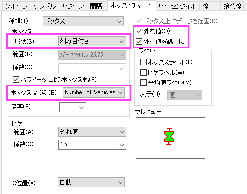
- OKをクリックしてダイアログを閉じます。Origin画面の右端にあるオブジェクトマネージャーを開き、 最後のプロットのチェックを外します。再スケールボタン
 をクリックして、グラフを再スケールします。
をクリックして、グラフを再スケールします。
- 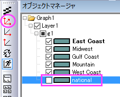
- グラフは次のようになります。
- 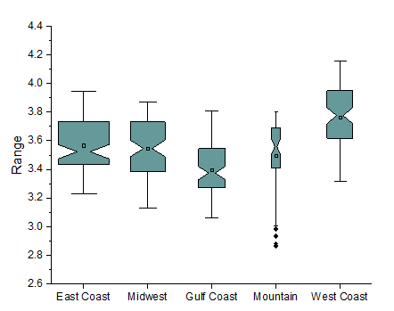
グラフスタイルの編集
以下のステップでボックスチャートの詳細な編集を行います。
- 各ボックスの色を同じ色にするには、ボックスのどれか1つでダブルクリックして、作図の詳細ダイアログを開きます。パターンタブに行きます。縁の色を橙色に設定します。太さを1.5にセットします。
- ボックスを塗りつぶすために、色の塗りつぶし のドロップダウンリストを開き、単一色にてより明るい橙色を下図の様に選択します。
- 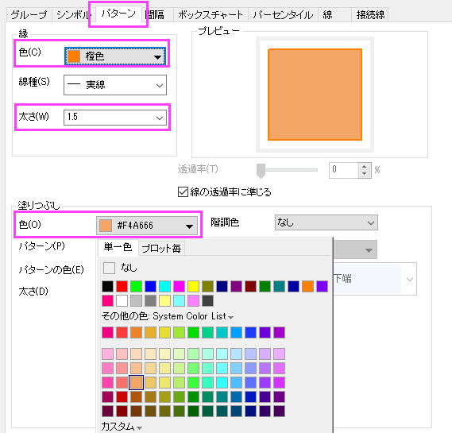
- ボックスチャートタブの外れ値のチェックをつけているので、シンボルタブが追加されています。このタブの編集オプションを使ってシンボルの表示を編集します。
- 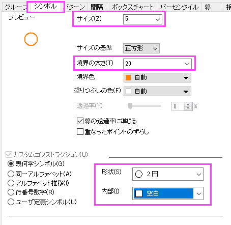
- 99% と 1%のシンボルを表示しないようにするには、パーセンタイルタブで99% と1%
のチェックを外します。平均のドロップダウンを開いて、1行2列目の記号を選択します。
- 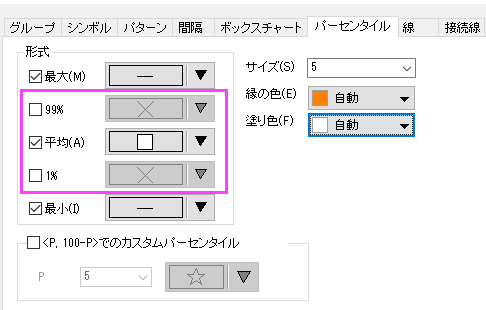
- OKボタンをクリックして、全ての変更を適用します。
軸の編集
- 各ボックス間に垂直の線を表示するには、X 軸上でダブルクリックし、軸ダイアログを開きます。水平アイコンを選択している事を確認してスケールタブを開きます。副目盛のカウントを1にします。
- 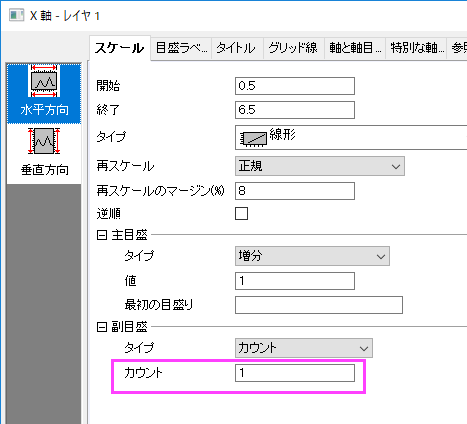
- グリッド線タブを開いてから垂直アイコンを選択します。副グリッド線の下にある表示にチェックを付けてスタイルを実線に設定します。
- 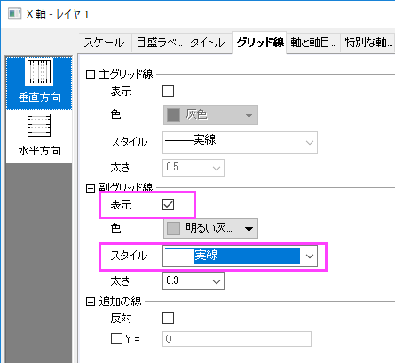
- 軸と軸目盛タブを開き、下X 軸の目盛を編集するので、下アイコンが選択されていることを確認して下図のように設定します。
- 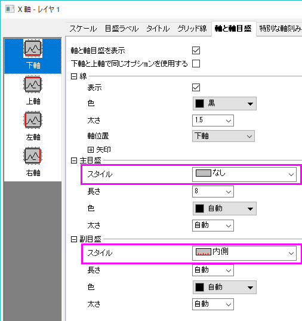
- Ctrlキーを抑えながら上と右アイコンをクリックして選択します。軸と軸目盛の表示にチェックを付け、上X軸と右Y軸を表示します。軸目盛はなしに設定します。
- 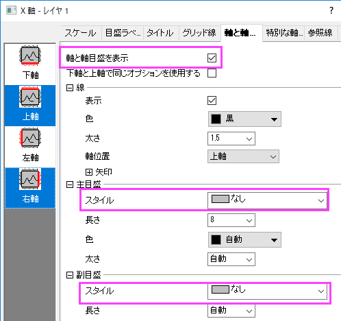
- スケールタブを開き、垂直アイコンを選択します。次のように設定します。
- 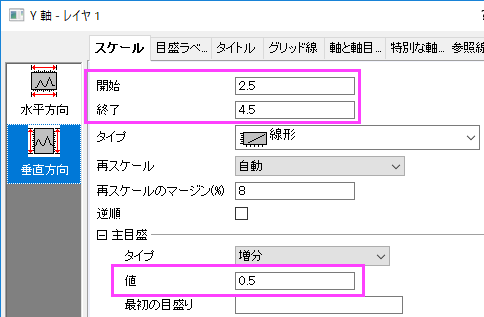
- 目盛ラベルタブを開き、左アイコンが選択されていることを確認してラベル接頭語に＄を入力します。
- 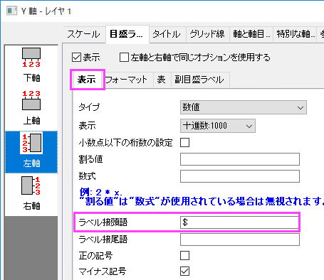
- タイトルタブを開き、左アイコンが選択されていることを確認します。Y 軸のタイトルを「Gasoline
Prices」に変更します。
- OKをクリックして軸ダイアログを閉じます。
- グラフ上にタイトルとフットノートを追加するために、グラフの空白領域上で右クリックして、レイヤタイトルの追加/変更をクリックします。US
Weekly Retail Gasoline Prices と入力します。タイトルを選択し、書式ツールバーを使用してフォントサイズを26にします。X
軸の目盛ラベルの下部で右クリックして、テキストの追加を選択します。編集モードにして、書式ツールバーのI
ボタンをクリックし、フットノートとして Box width indicates number of vehicles in each
area と入力します。入力した文字は斜体で表示されます。
国の平均線と最大・最小範囲を追加
さらに、Y 軸に3つの参照線を追加して、国際的なガソリン価格の最大最小範囲を表示します。
- Y軸をダブルクリックして、再度軸ダイアログを開きます。参照線タブに移動し、詳細...ボタンをクリックして、参照線ダイアログを開きます。
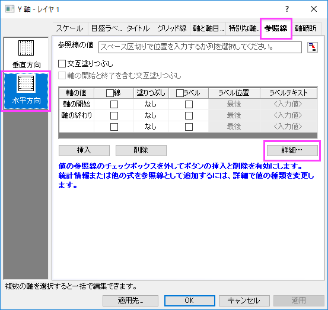
- 参照線ダイアログの下側にある追加ボタンをクリックして、参照線を追加します。新規の線を選択し、値の種類を統計に設定します。軸の値にMean(plotdata(6,
Y)) を入力します。（このボックスの最後にある矢印をクリックして、埋め込みパターンから選択することが出来ます。）自動フォーマットのチェックを外し、線の色と種類を暗い青
と 破線に設定します。ラベルノードの下にある表示にチェックを入れます。
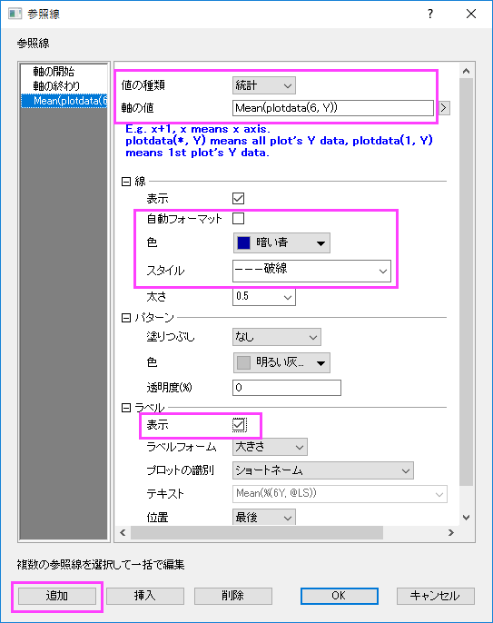
- 追加ボタンをクリックして、2番目の参照線を追加します。参照線パネルで値の種類を統計に設定し、軸の値のボックスにmin(plotdata(6,
Y))を入力します。線の色と種類を暗い青と実線に設定します。
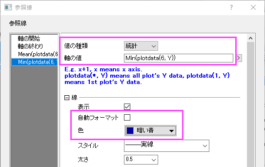
- 追加ボタンをクリックして、3番目の参照線を追加します。参照線パネルで値の種類を統計に設定し、軸の値のボックスにmax(plotdata(6,
Y))を入力します。線の色と種類を暗い青と実線に設定します。
- Okボタンをクリックし、ダイアログを閉じます。表に参照線が追加されています。
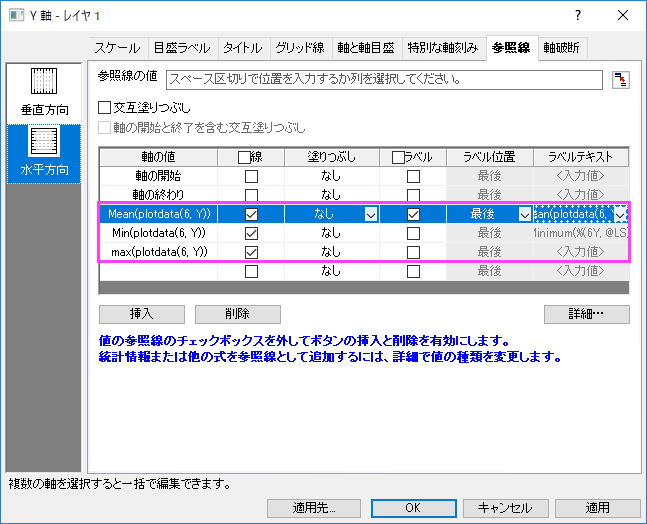
- 最初に追加された線のラベルセルでNational Averageと入力します。2番目と3番目の参照線で、塗りつぶしを次図のように設定します。
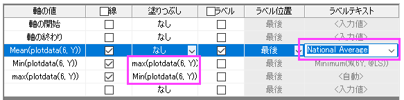
- 適用ボタンをクリックし、参照線をグラフに追加します。詳細...ボタンを再度クリックして参照線ダイアログを開き、左のパネルから2番目の線を選択します。パターンノードにある色を空色に設定し、透明度を90にします。OK
ボタンをクリックします。
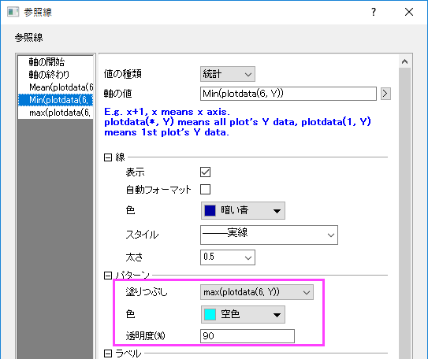
- OKボタンをクリックして、ダイアログを閉じます。グラフに戻り、平均のラベルで右クリックして、プロパティ..からテキストオブジェクトダイアログを開きます。次のテキストを入力して、書式を設定します。
National Average $$(v, *3)
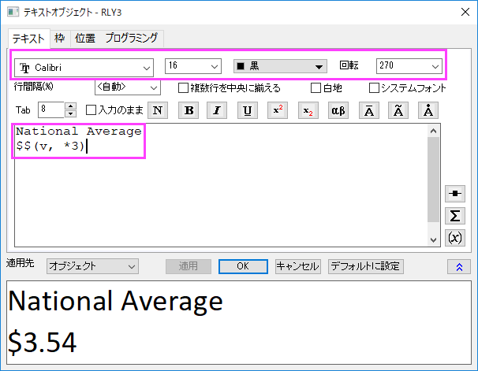
- OK ボタンをクリックします。最終的なグラフが作成されます。